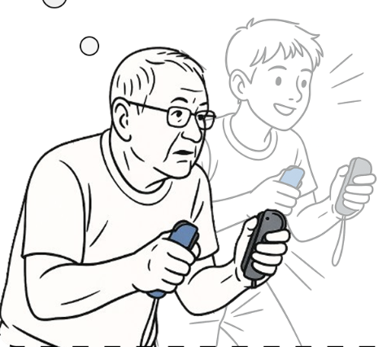
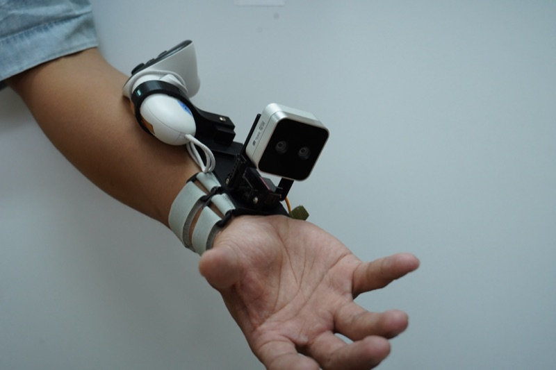
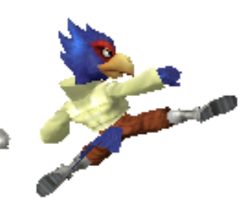

Hi, I'm Wei-Tang Hsu.
HCI researcher building technology that extends human capability in the physical world.
About
I am a Computer Science undergraduate at National Taiwan University, working with Prof. Shan-Yuan Teng at DexLab. My research interest lies in Human-Computer Interaction, specifically in improving how humans interact with the physical world. Rather than viewing computers as isolated tools, I am interested in how technology can function as an extension of human capability through adaptive interfaces and thoughtful fabrication. I co-authored ElderPlay (DIS '26), where I implemented a system that translates body gestures captured by cameras into Nintendo Switch controller inputs and ran the user study with older adults, and I built a wrist-worn depth camera that lets people see through their own hands in augmented reality (UIST '26 demo). I enjoy building the hardware myself with 3D printing and digital fabrication. In summer 2026, I joined the Computer Science Summer Research Fellowship program and was a research intern at the Human Computer Integration Lab at the University of Chicago with Prof. Pedro Lopes.
Research
-

ElderPlay: Supporting Age-Inclusive Gameplay for Older Adults via Real-Time Gesture-to-Controller Translation (DIS '26)
We designed and built a real-time system that translates body movements and intuitive gestures into standard game inputs, letting older adults play existing button-based games without modifying the games themselves. The interaction set came from a gesture elicitation study that collected user-defined movements grounded in older adults' everyday experiences, and we evaluated the system through gameplay sessions with two commercial Nintendo Switch games. My contributions: architecting and implementing the gesture-to-input translation pipeline, and designing and conducting the summative user study.
-

See Through With The Hands: Seamless Occluded Interactions in Augmented Reality (UIST '26 Demo)
A wrist-mounted device that constructs real-time see-through views for occluded manual interaction, without external tracking. The depth image from the camera is transposed to align with the headset view, enabling intuitive body positioning while manipulating objects, and a custom actuated mount adapts the depth camera's angle to different hand poses. Despite its simplicity, the prototype enables fine manipulation tasks such as aiming at and screwing an occluded nut.
Mini Projects
-
GeoGuessr bot plugin
A multi-agent system that adds AI-controlled bot players to a live GeoGuessr-style web game. I designed the overall architecture, built a Street View screenshot capture pipeline, and integrated an LLM for in-game decision-making and chat. The bots connect to the game API, so humans and AI players can join the same real-time multiplayer session. Built with Python, JavaScript, an LLM API and the Google Street View API.
-

Smash bot
This is a final project of "Robot Perceptron and Learning".
We built a competitive gameplay bot for Super Smash Bros. Melee using a hybrid approach that combines imitation learning and reinforcement learning. The model first learns from professional gameplay data and then improves through self-play against in-game AI opponents. To accelerate training, we designed a pipelined framework that significantly increases learning efficiency. The resulting agent is capable of using FALCO to defeat Level 7 hard coded bots (CP7).
We're still cleaning up our repo; the link will be uploaded later.
Experience
- Summer Intern Researcher — Human Computer Integration Lab, University of Chicago (Jul 2026 – Aug 2026)
- Undergraduate Researcher — DexLab, CSIE, National Taiwan University (Feb 2026 – present)
- Web Chair — ROCLING 2025, Taiwan Conference on Computational Linguistics (Fall 2025): ran the conference website, submission system setup and volunteer coordination
- Club President — NTU Survival Game Club (Mar 2024 – Aug 2025): led 30+ members and planned the yearly activities and events
Skills & Interests
- Fabrication & prototyping: Fusion 360 (CAD), Cura, PrusaSlicer (FDM 3D printing), Processing
- Programming: Python, C, C++, JavaScript, CUDA, LaTeX
- Interests: fixing motorcycles, bouldering, mountain climbing, working out
Contact
Feel free to reach out via email or socials.